Marketing analytics · Growth
Growth & Retention Analytics
A growth analysis for a consumer online-learning subscription app that was spending more to acquire learners while losing paying ones a few months in. I defined the metrics, measured the funnel and channel economics, built the data models in dbt, built and stress-tested a churn model, read a win-back experiment, and turned it into a budget and retention decision.
- Databricks (SQL editor, Python notebooks, Unity Catalog)
- SQL
- dbt on Databricks (staging → marts, tests, snapshots)
- Python (pandas, scikit-learn, XGBoost, statsmodels)
- Funnel, cohort and retention analysis
- Unit economics (CAC, ROAS, LTV:CAC)
- Churn modeling with point-in-time features
- Experiment design and analysis
- Forecasting and pacing
- Stakeholder requirements
Results at a glance
| Question | Method | Finding | Action |
|---|---|---|---|
| Where does the funnel leak? | Event funnel on 144K visits, 80K sign-ups | 49.4% of sign-ups activate; 4.7% become paying | Fix activation first: it gates everything after it |
| Which channels are worth the spend? | CAC, ROAS and LTV:CAC by channel | Affiliate 5.3, paid search 3.1, app store 2.5, paid social 1.9 | Shift budget toward affiliate and paid search; fix paid social before spending more |
| Who churns? | Retention curve, segment cuts, k-means | Monthly churn 5.3%; annual plans 28% vs monthly 53%; four personas from 26% to 59% | Plan and engagement are the levers |
| Can we predict it? | Point-in-time model, 5-fold CV | ROC-AUC 0.64 after removing a leak that had inflated it to 0.70; top decile cancels at 60% vs a 40% base | Use it to prioritise, not to predict individuals |
| Does a save offer work? | Randomized holdout, two-proportion test | Churn 46.7% → 41.9% (−4.8 pp, p = 0.045), but each offer returns $9.71 and costs $10.80 | Don't scale as priced; lead with the no-discount annual-plan nudge |
How the work fit together
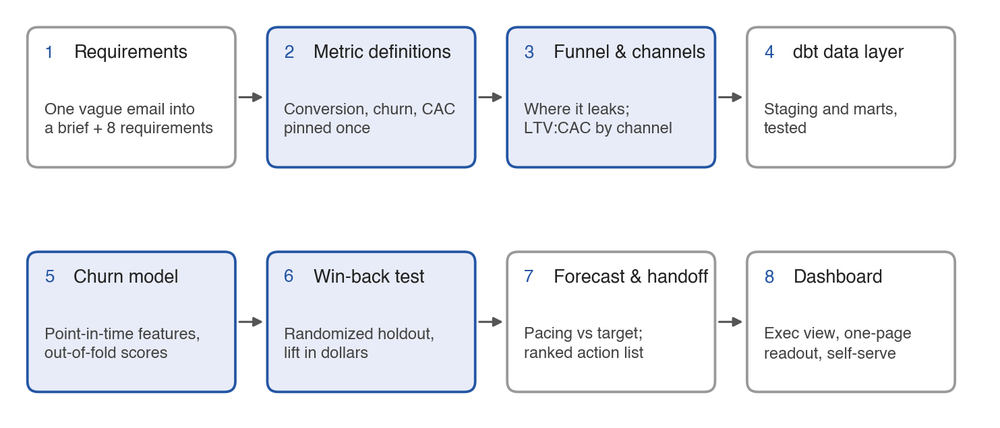
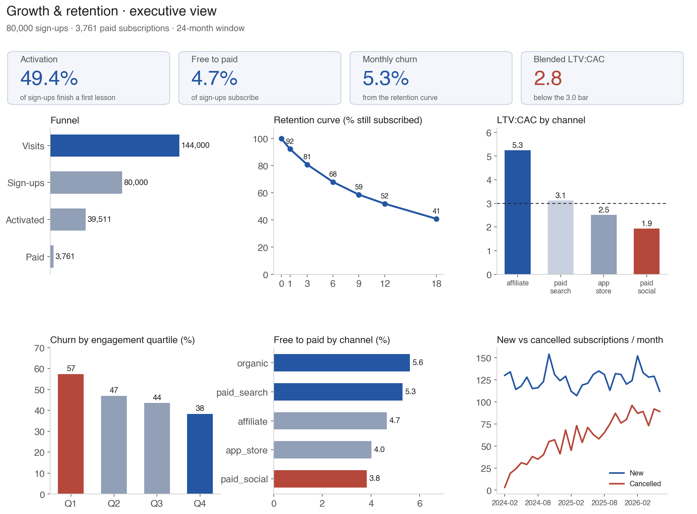
1 · The ask, and what it really meant
The VP of Growth wrote one email with two worries: paid acquisition keeps getting more expensive, and paying learners cancel a few months in. Hunches on the table were that paid social is underwater and that low-engagement learners churn, neither proven. She wanted four things: where the funnel leaks, which channels are worth the spend, who is about to churn, and something she could look at herself instead of a monthly deck.
Each stakeholder meant something different. Marketing optimised cost per sign-up. Finance owned LTV:CAC and wanted spend to reconcile to invoices. Product ran onboarding and win-back and warned against chasing cheap sign-ups who never engage. I turned this into a one-page brief and eight requirements, each naming who gets the number and what decision it drives. Two guardrails shaped everything after:
- Optimise paying retention and LTV:CAC, not raw sign-ups.
- Churn features must be point-in-time. A model that sees post-cancellation activity is invalid regardless of its AUC.
Pricing strategy was explicitly out of scope.
Who needed what
| Stakeholder | What they were really asking | Metrics that answer it |
|---|---|---|
| Growth | Where does the funnel leak? Why is CAC rising and retention falling? | Funnel (sign-up → activation → paid → retained), CAC, net retention |
| Marketing | Which channels do I fund? | CAC, ROAS and LTV:CAC by channel, conversion by channel |
| Product / Lifecycle | Who is about to churn, and does win-back work? | Churn by segment, ranked at-risk list, A/B lift |
| Finance | What are the unit economics, and does spend reconcile? | LTV:CAC, payback, spend reconciliation |
What I asked to pin the ask down. "Acquisition is expensive": cost per sign-up, per activated learner or per paying one? (Per paying subscriber, measured against LTV.) "Retention is leaking": monthly, cumulative or annualised churn? (Monthly, shown with the curve.) "Worth the spend": judged on LTV:CAC, not sign-ups. Success meant shifting spend toward channels above 3:1 and lifting paid retention through a targeted win-back, not producing more sign-ups. Data scope was the sign-up → activation → paid → retained funnel over a 24-month window; recent subscriptions hadn't had time to churn, so cohorts of different tenure are never compared on raw churn.
The requirements I handed off
| # | Requirement | Priority | Acceptance criterion |
|---|---|---|---|
| R1 | Funnel overview, sign-up → activation → paid → retained | P0 | Per-stage rates reconcile to the event counts |
| R2 | Channel economics: CAC, ROAS, LTV:CAC | P0 | Spend ÷ subscribers; LTV = ARPU ÷ monthly churn; sortable by channel |
| R3 | Conversion and churn by segment | P0 | Conversion by channel and age; churn by plan, channel and engagement |
| R4 | Churn-propensity model and ranked at-risk list | P0 | Grain = subscription; point-in-time features; ranks active subscribers |
| R5 | Executive self-service view | P0 | Funnel, channel LTV:CAC and retention on one filterable screen |
| R6 | Win-back A/B on at-risk actives | P1 | Treatment vs holdout, incremental lift with significance |
| R7 | Spend reconciliation | P2 | Channel spend ties to invoices by channel and month (~$211K total) |
| R8 | Leakage and point-in-time discipline | P0 | Features as of the prediction date; leakage-safe estimate; rank on AUC, not accuracy |
2 · Pinning the metrics before computing anything
The same extract (80,000 sign-ups, 39,511 activations, 3,761 paid subscriptions) produces very different answers depending on a silent choice, so I fixed the definitions first.
| "Conversion rate" | What was actually counted | |
|---|---|---|
| 55.6% | Sign-ups ÷ visits | A top-of-funnel step |
| 9.5% | Paid ÷ activated | A real stage rate, not the headline |
| 4.7% | Paid ÷ all sign-ups | Free-to-paid conversion |
| "Churn rate" | What was actually counted | |
|---|---|---|
| 46.5% | Share of all subscribers who ever cancelled | Mixes one-month-old and two-year-old subscriptions; unusable for a decision |
| ~48% | A monthly rate annualised without saying so | Fine only if labelled |
| 5.3% / month | Monthly hazard from the retention curve | Feeds LTV; reported with the curve |
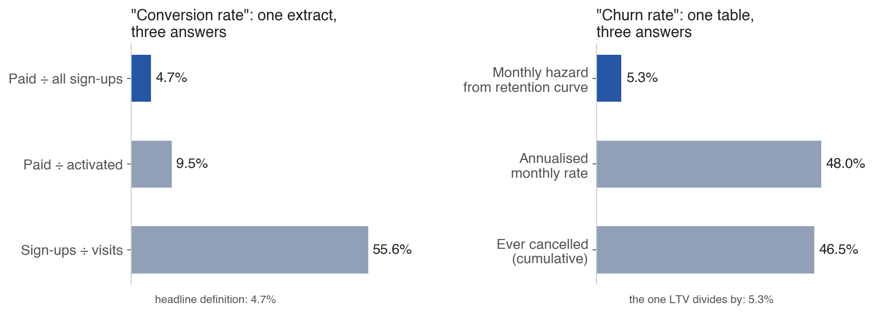
The 46.5% matters because LTV is ARPU ÷ monthly churn: plugging in the cumulative number values a subscriber at a tenth of the truth. CAC and LTV:CAC are always reported by channel, since a blended CAC of about $73 hides a range from $39 to $104. Every rate is sum-first-then-divide, and retention uses each subscription's observation window so a two-month-old subscription is never counted against 12-month retention.
The metric dictionary (one pinned row per metric, so anyone can write the SQL without asking me):
| Metric | Numerator | Denominator | Grain |
|---|---|---|---|
| Visit → sign-up | Sign-up events | Session-start events | Event |
| Activation rate | Learners who completed a first lesson | All sign-ups | Learner |
| Free → paid conversion | Learners with a subscription | All sign-ups | Learner |
| Retention at month M | Subscriptions surviving past M | Subscriptions observed at least M months | Subscription |
| Monthly churn | 1 − (retention at M12)^(1/12) | Subscriptions observed at least 12 months | Subscription-month |
| CAC | Channel spend | Subscribers acquired in that channel | Channel |
| ROAS | Revenue to date | Spend | Channel |
| LTV | ARPU ($10.80 blended) | Monthly churn | Subscriber |
| LTV:CAC (healthy above 3) | LTV | CAC | Channel |
The data. Twelve tables on Databricks: 80,000 learners, 3,761 paid subscriptions (the churn label), a 553K-row learner-by-month engagement panel, 132K course enrolments, ~283K web and app funnel events, 136K support tickets, campaign and channel-by-month spend, a course catalogue and reference dimensions. Everything joins on learner_id; funnel events carry a null learner for anonymous visitors, and sign_up is the seam where a visitor becomes a learner. Plans are monthly ($11.90) or annual ($7.90 a month, prepaid). The work ran in Databricks: SQL in the SQL editor, the Python work (segmentation, model, experiment, scoring) in notebooks on serverless compute, and the dbt project through the dbt-databricks adapter into my own schema.
3 · Funnel and channel economics
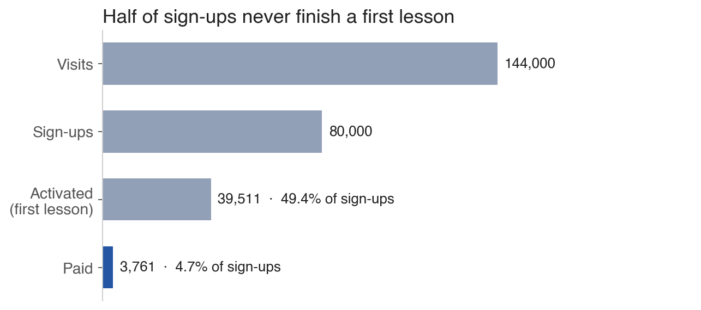
The biggest leak is sign-up to activation: half of learners never finish a first lesson, and activation varies by channel from 55% (organic) and 51% (affiliate) to 46% for paid social, so the channel that costs the most also activates the least. Free-to-paid conversion by channel runs from organic (5.6%) and paid search (5.3%) down to paid social (3.8%); by age, 35–44 converts best (5.2%) and 18–24 worst (4.2%).
Conversion alone points at the wrong channels, because it ignores cost. Joining spend (about $211K across the paid channels over 30 months) to the subscription outcome gives the number that decides the budget:
| Channel | CAC | ROAS to date | LTV:CAC |
|---|---|---|---|
| Affiliate | $38.50 | 2.56× | 5.25 |
| Paid search | $65.19 | 1.48× | 3.13 |
| App store | $80.94 | 1.13× | 2.52 |
| Paid social | $104.32 | 0.81× | 1.94 |
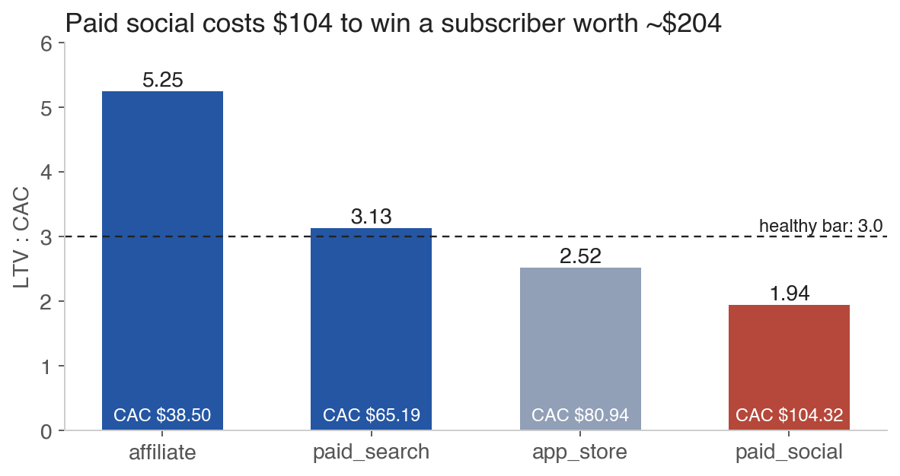
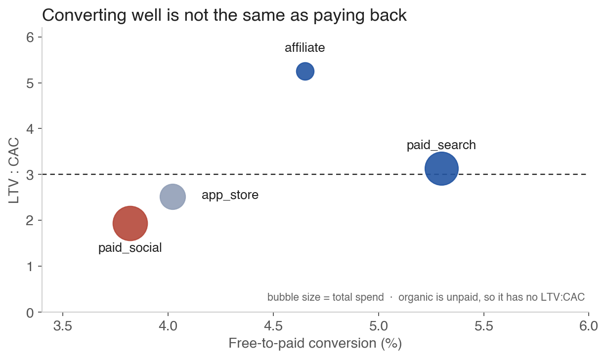
Paid search converts best among paid channels, but affiliate returns a paying learner for $38.50 and clears the 3:1 bar comfortably, while paid social spends about $104 to win a subscriber worth roughly $204. Neither the funnel (which stops at sign-up) nor the spend table (which doesn't know who paid) shows this alone; the join is the analysis.
The query behind it joins two grains deliberately, spend per channel and subscription outcome per channel, rather than letting a BI tool fan the joins out:
WITH spend AS (
SELECT channel, sum(spend_usd) AS spend FROM channel_spend GROUP BY channel
), subs AS (
SELECT l.acquisition_channel AS channel, count(*) AS subs,
sum(s.price_monthly * s.tenure_months) AS rev_to_date,
avg(s.price_monthly) AS arpu
FROM subscriptions s JOIN learners l USING (learner_id)
GROUP BY l.acquisition_channel
)
SELECT sp.channel,
round(sp.spend / su.subs, 2) AS cac,
round(su.rev_to_date / sp.spend, 2) AS roas_to_date,
round((su.arpu / 0.053) / (sp.spend / su.subs), 2) AS ltv_cac -- LTV = ARPU / monthly churn
FROM spend sp JOIN subs su USING (channel)
ORDER BY ltv_cac DESC;
Organic has no spend, so the join drops it, which is the correct behaviour: it is unpaid, not free to evaluate.
4 · Retention: who leaves and when
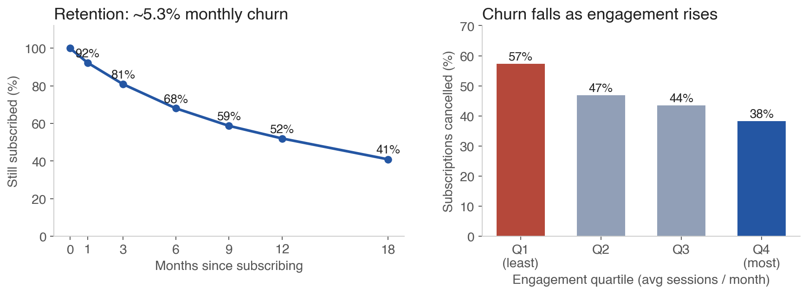
Retention falls from 92% at month 1 to 81%, 68%, 59%, 52% and 41% at months 3, 6, 9, 12 and 18, a normal consumer-subscription shape. Churn falls steadily as average engagement rises, from 57% in the least-engaged quartile to 38% in the most engaged. Annual plans cancel at roughly half the rate of monthly ones (28% vs 53%).
| Cut | Cumulative churn |
|---|---|
| Plan | Monthly 53.4% · annual 28.2% |
| Channel | App store 52.3% · paid social 51.5% · paid search 46.0% · affiliate 43.5% · organic 41.2% |
| Engagement quartile | Q1 57.3% · Q2 46.9% · Q3 43.5% · Q4 38.3% |
| Region | Central 48.5% · Northeast 46.8% · West 46.1% · Southeast 44.9% |
Region barely matters (45–49% across all four), and I reported it as a non-driver rather than dress up noise. The two big, actionable levers are engagement and plan. One caution I'll come back to: this engagement figure averages each learner's whole history, so it describes who churns rather than predicting who will, and the modelling section shows how much weaker the early signal is.
Cancellations have climbed from under 40 a month in early 2024 to about 90, while new subscriptions hold at roughly 110–150, so net growth is narrowing. With about 130 adds a month and 4.5% monthly churn, the base converges towards roughly 2,900 active subscribers unless retention or acquisition changes.
To turn "low engagement churns" into something Product can act on, I clustered the 3,761 paying learners with k-means. Clustering is unsupervised, so it never sees the churn label: it finds whole-person groups, and I read each group's churn rate afterwards. Features were plan, average sessions, active days, streak, lessons completed and support tickets. I left tenure out on purpose, because for a cancelled subscription it is the time to cancel, which would smuggle the outcome into the clusters, and I standardised the rest, otherwise lesson count swamps every distance. Silhouette favours the coarsest split (k = 2, 0.32) over k = 4 (0.25); I chose four because four lifecycle flows is a number a team can run and the groups behave differently, but I wouldn't claim the data forces four.
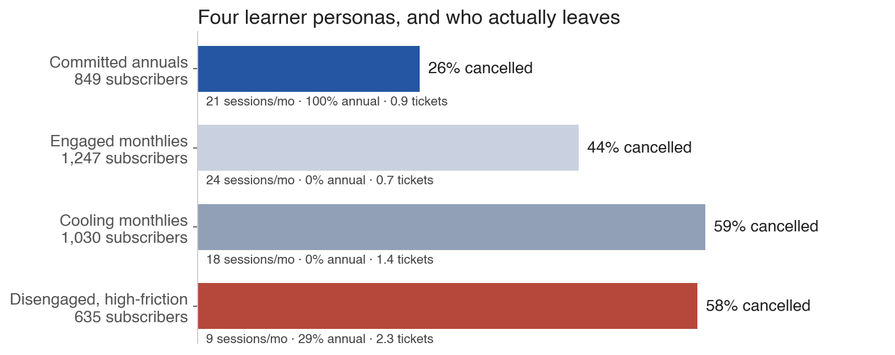
| Persona | Who they are | Lifecycle play |
|---|---|---|
| Committed annuals (849) | All annual, 21 sessions a month, few tickets; 26% cancel | Retention bedrock: nurture and cross-sell. No win-back budget |
| Engaged monthlies (1,247) | Monthly, the most active (24 sessions, long streaks); 44% cancel | Nudge to the annual plan, which locks in retention |
| Cooling monthlies (1,030) | Monthly, mid engagement (18 sessions), more tickets; 59% cancel | The win-back target: re-engagement and a save offer, tested against a holdout |
| Disengaged, high-friction (635) | Low usage (9 sessions), 2.3 tickets, 29% annual; 58% cancel | Fix onboarding and support friction upstream; win-back rarely works this late |
The result I didn't expect is that the heaviest users on a monthly plan still cancel at 44%, against 26% for annuals with similar engagement. Plan is a bigger lever than usage, which is why the annual-upgrade nudge sits at the top of the action list later.
5 · A tested data layer in dbt
The funnel, channel-economics and churn-training queries had become a pile of overlapping SQL, so I moved them into a dbt project so each metric is defined once.
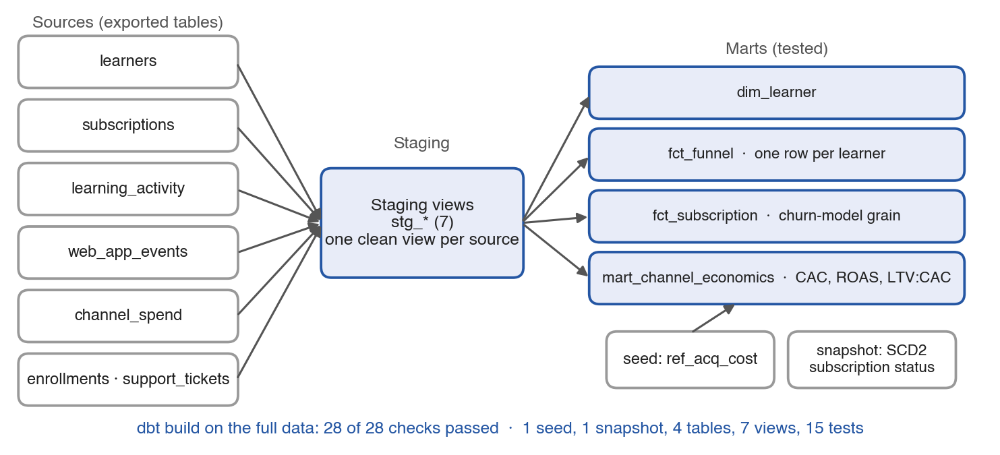
- Staging: seven views, one per source table.
- Marts:
dim_learner;fct_funnel(one row per learner with sign-up, activation and paid flags);fct_subscription(the churn-model grain, one row per subscription); andmart_channel_economics(CAC, ROAS and LTV:CAC by channel, using a cost-per-session seed). - Tests: unique and not-null on keys, relationships from each fact back to the learner dimension, and accepted-values on plan, channel and the churn flag.
dbt buildfails if any test fails, so bad data can't reach a dashboard. - Snapshot: an SCD2 snapshot of subscription status. The source data holds one status per subscription, so it captures a single version; it shows the technique rather than changing a number.
The channel mart reproduces the SQL results exactly: affiliate $38.50 CAC and 5.25 LTV:CAC, paid social $104.32 and 1.94. The funnel mart reproduces 80,000 sign-ups, 39,511 activated and 3,761 paid.
The channel-economics mart is the same query as above, now defined once and reusable by any dashboard:
-- models/marts/mart_channel_economics.sql (spend and subs CTEs as in the query above)
select sp.channel, sp.spend, su.subs,
round(sp.spend / su.subs, 2) as cac,
round(su.rev_to_date / sp.spend, 2) as roas_to_date,
round((su.arpu / 0.053) / (sp.spend / su.subs), 2) as ltv_cac,
seed.cost_per_session as benchmark_cost_per_session
from spend sp
join subs su using (channel)
left join {{ ref('ref_acq_cost') }} seed on seed.channel = sp.channel
I built the project on Databricks with the dbt-databricks adapter and materialised the marts as Delta tables. dbt build passes all 28 checks (one seed, one snapshot, four tables, seven views, 15 tests). Since dbt is warehouse-agnostic, the same models would target Snowflake or BigQuery by swapping the adapter and connection. Changes would go through a branch, dbt build, a pull request and CI that reruns the build, and I'd move the large engagement fact to an incremental model so each run processes only new learner-months. I haven't run it as a scheduled production pipeline.
fct_subscription carries whole-history engagement as a convenience for reporting; the churn model rebuilds those features point-in-time, which is where the next section starts.
6 · Churn model: two leaks, one honest number
Averaging a subscriber's engagement over their whole history makes churners look inactive because they already left. So I fixed the prediction point at the end of month 3 and built every feature from months 0–2 only: sessions, streak, support tickets, plan, price and channel. Anything later, plus the cancel date, tenure and status, was banned. The rule lives in the join itself:
WITH early_eng AS ( -- engagement over the FIRST 3 months of the subscription only
SELECT s.subscription_id,
avg(a.sessions) AS sessions_m0_3, avg(a.streak_days_max) AS streak_m0_3,
avg(a.active_days) AS active_days_m0_3, sum(a.lessons_completed) AS lessons_m0_3
FROM subscriptions s
JOIN learning_activity a
ON a.learner_id = s.learner_id
AND a.activity_month >= date_trunc('month', s.start_date)
AND a.activity_month < s.start_date + INTERVAL 3 MONTH -- strictly before month 3: no leakage
GROUP BY s.subscription_id
)
The first version looked good, and the number was wrong. I trained on every subscription observed for at least 3 months (3,352 rows, 51.5% churned). It scored ROC-AUC 0.70, and the top risk decile churned at 99.4%. That is too good. Looking at who sat in that decile, 463 of the 3,352 had cancelled in months 1 or 2 and every one of them was labelled as churn. They had left before the prediction point, and because activity rows only exist while someone is subscribed, a learner with no early activity was simply someone who had already gone. The features were technically time-bounded and still carried the answer.
I rebuilt the population to what the business question actually is: subscribers still subscribed at the end of month 3, predicting who cancels afterwards. That removes 639 subscriptions (the 463, plus 176 who cancelled in month 3), leaving 2,713 with a 40% base rate.
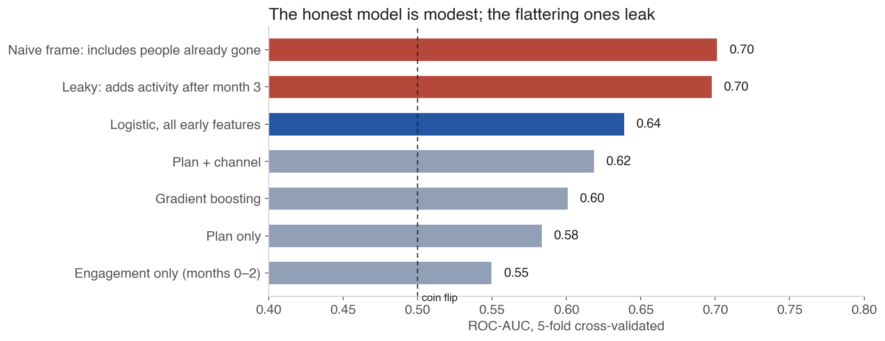
- Evaluation: 5-fold stratified cross-validation, scoring every row out-of-fold so no subscriber is scored by a model that trained on them.
- Result: ROC-AUC 0.64 (folds 0.62–0.67), PR-AUC 0.52 against a 0.40 baseline. Scoring the same rows in-sample gives 0.79, which is why the handoff uses out-of-fold scores.
- Simple beat clever: gradient boosting scored 0.60, below a logistic regression at 0.64, on 2,713 rows. I would ship the logistic model, which Product can also read.
- Where the signal is: plan alone gives 0.58, plan plus channel 0.62, all early features 0.64. Early engagement on its own is weak (0.55); churn by early-sessions quartile is 46%, 42%, 36% and 36%, much flatter than the 57% to 38% whole-history view. Adding region and age lowered the score slightly (0.60 to 0.59 for the boosted model), so I left them out.
- Why not accuracy: the job is to rank subscribers for a limited win-back budget, not to label each one, so I report ROC-AUC, PR-AUC and lift, and set the threshold from the budget. At the top 20% by risk, precision is 57% against the 40% base, and it catches 29% of churners.
Permutation importance (drop in ROC-AUC when a feature is shuffled) put price, i.e. plan, first (0.080), then channel (0.027) and early sessions (0.020), with streak and tickets near zero. That agrees with the retention analysis on plan and channel and says early usage matters less than I expected.
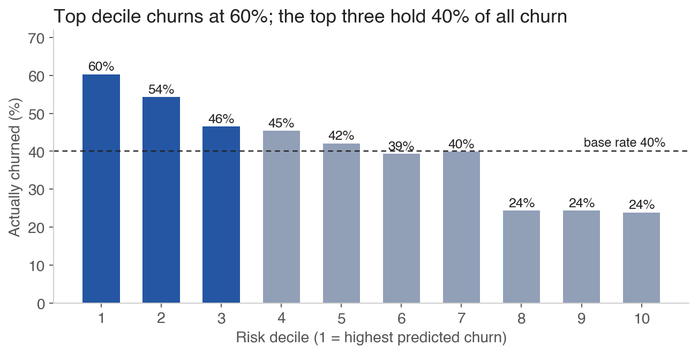
| Decile (by P(churn)) | Churn rate | Lift vs 40% base | Cumulative share of all churn |
|---|---|---|---|
| 1 (top) | 60.3% | 1.51× | 15% |
| 2 | 54.2% | 1.36× | 29% |
| 3 | 46.5% | 1.16× | 40% |
| 8, 9, 10 (bottom three) | ~24% each | ~0.60× | 18% of all churn in total |
The ranking is useful but not sharp: the top three deciles hold about 40% of all churn, and the bottom three churn at about 24%. It is good enough to decide where not to spend, and modest as a predictor of any one person.
7 · Does a win-back offer work?
A ranked list says who is at risk, not whether a save offer would change their mind; some would have stayed anyway. Comparing treated churn to last quarter proves nothing either, because the groups differ in engagement mix, timing and whatever else was running. Randomising balances the arms on everything, so the churn gap is attributable to the offer.
Design. - Population: active subscribers with mid-range churn probability, the ones a save offer can actually move. A near-certain churner is a wasted offer, and a loyal annual subscriber would stay anyway, so discounting them is cannibalisation. - Assignment: a deterministic hash of the subscription ID, so the same person is always in the same arm. Holdout gets nothing; treatment gets a one-month-free offer. - Primary metric: churn rate over the evaluation window (lower is better, the opposite sign to a conversion test). - Guardrails: offer margin, since a discount costs money on every treated subscriber including those who would have stayed, and cannibalisation. - Discipline: population, arms, metric, window and significance threshold locked before launch, with a fixed sample size and stop date so there is no peeking.
Result. I sized the test first: detecting a 5-pp reduction (47% to 42%) at 80% power and α = 0.05 needs about 1,550 subscribers per arm (a 2-pp effect would need about 9,750).
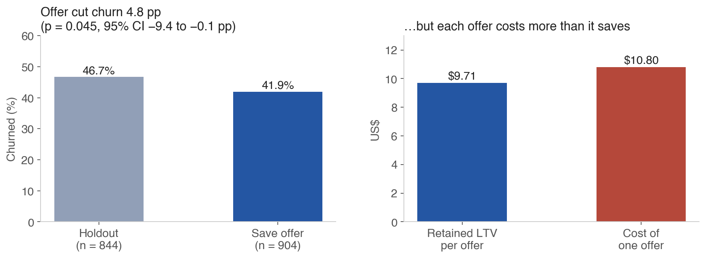
| Arm | Subscribers | Churned | Churn rate |
|---|---|---|---|
| Holdout | 844 | 394 | 46.7% |
| Treatment | 904 | 379 | 41.9% |
The offer cut churn by 4.8 percentage points (about 10% relative); z = −2.00, p = 0.045, 95% CI −9.4 to −0.1 pp.
The economics are the more important result. About 43 subscribers were kept, worth roughly $8,800 in lifetime value, against about $9,760 of offer cost. One offer returns about $9.71 in expected retained LTV (4.76 pp × $204) and costs $10.80, so every offer loses about a dollar. Break-even needs an offer under ~$9.71 or an uplift of about 5.3 pp or more.
Better targeting doesn't fix this on its own: the test measured one average uplift, so each offer saves the same amount whoever receives it. To check whether high-risk subscribers respond more, I split the 1,500 test subscribers I had scores for into risk thirds:
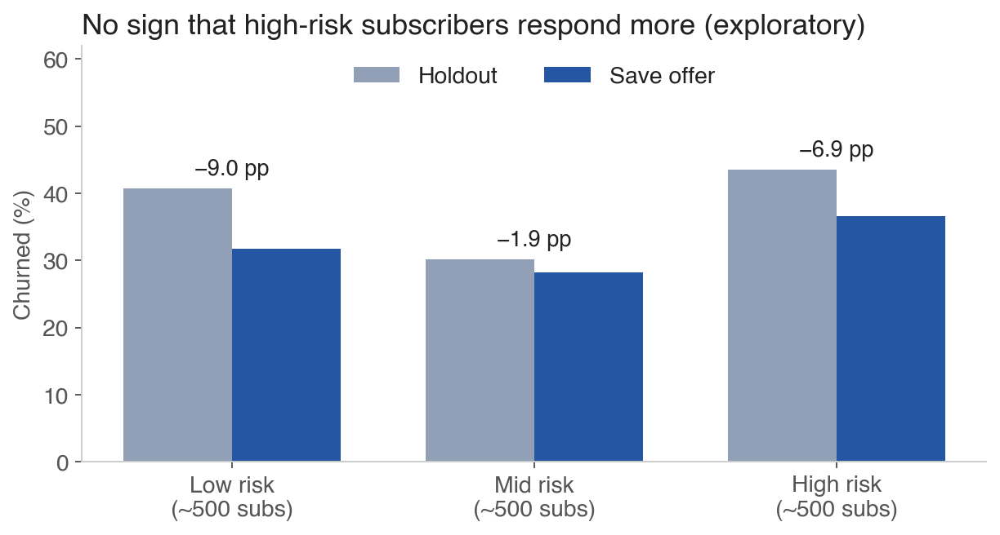
The reductions were 9.0 pp (low), 1.9 pp (mid) and 6.9 pp (high), with about 250 per arm in each. That is noise, not a pattern; it gives no reason to believe high-risk subscribers respond more, and the test wasn't powered to say.
8 · Forecast, handoff and recommendation
Pacing. At the current run-rate (1,934 active subscribers, ~130 new and ~88 cancelling per month, recent monthly churn ≈ 4.5%), active subscribers reach about 2,054 by quarter-end. Against an illustrative target of 2,100 that is roughly 2% behind (46 short), a small miss, flagged a quarter ahead. Varying churn by ±0.5 pp and adds by ±20 a month gives a range of about 1,970 to 2,140, so the target is within reach if retention improves.
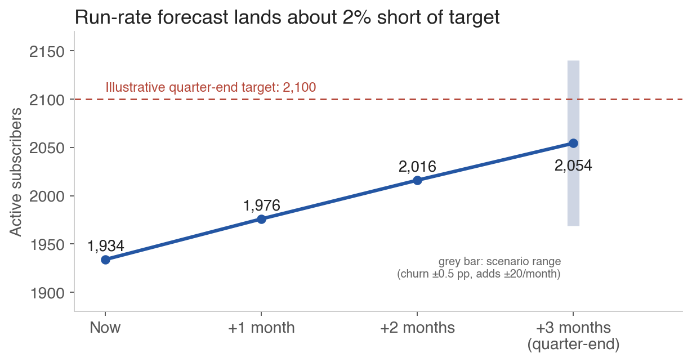
The cleanest lever to close the gap is nudging engaged monthly subscribers to the annual plan, which locks in retention at no discount cost; a cost-controlled win-back is the second. The recent 4.5% run-rate sits below the 5.3% lifetime figure because they are different windows and methods, so I use 5.3% for LTV and the run-rate for near-term pacing.
The at-risk list. I scored the 1,564 active subscribers who were still subscribed at month 3 (out-of-fold), ranked them into deciles, and tagged each with an action matched to risk, plan and engagement, spending margin only where it can pay:
| Segment | Action | Subscribers |
|---|---|---|
| Top three deciles, monthly plan | Save offer, only if the offer gets cheaper or a per-segment test shows a stronger response | 469 |
| Annual plan, deciles 1–6 | Engagement nudge, never a discount (no annuals reached the top three deciles) | 30 |
| Deciles 4–6, monthly plan | Annual-upgrade nudge, which lowers churn with no discount cost | 439 |
| Everyone else | Monitor | 626 |
The rule that assigns the action is plain SQL on the ranked table, so Product can read and change it:
SELECT subscription_id, plan, p_churn, decile,
CASE
WHEN decile <= 3 AND plan = 'monthly' THEN 'save_offer'
WHEN decile <= 3 AND plan = 'annual' THEN 'engagement_nudge' -- never discount an annual
WHEN decile <= 6 AND plan = 'monthly' THEN 'annual_upgrade_nudge' -- lock in with no discount
WHEN decile <= 6 AND plan = 'annual' THEN 'engagement_nudge'
ELSE 'monitor'
END AS recommended_action
FROM churn_ranked ORDER BY p_churn DESC;
The offer itself is matched to why someone is lapsing, not applied to everyone: an engagement nudge ("pick up your streak, here's a five-minute lesson") for subscribers whose usage dropped, which costs no margin; a small, tested save offer for price-sensitive monthlies; and an annual-upgrade nudge for engaged monthlies. Channel is in-app plus email to subscribers who have opted in.
Win-back applies only to active subscribers. Sizing the save offer against the measured uplift shows why targeting alone doesn't rescue it:
| Strategy | Treated | Expected saves | LTV saved | Offer cost | Net |
|---|---|---|---|---|---|
| Blanket (all scored actives) | 1,564 | ~74 | ~$15.2K | ~$16.9K | ~−$1.7K |
| Top three deciles | 469 | ~22 | ~$4.6K | ~$5.1K | ~−$0.5K |
| Top five deciles | 782 | ~37 | ~$7.6K | ~$8.4K | ~−$0.9K |
Saves per dollar are identical across rows, because one average uplift was measured. Targeting shrinks the loss but doesn't turn it into a gain.
The decision memo for Product was one paragraph: about 1,564 active subscribers are scored; the save offer would run on the top-three-decile monthly subscribers (469 people), where the measured uplift gives about 22 expected saves (~$4.6K of retained value) against ~$5.1K of offer cost, so it doesn't clear its cost as priced. Run it only if the offer gets cheaper or a purpose-built test shows a stronger response; engaged annuals get a nudge, not a discount; the low-risk bulk is left alone.
Recommendation. 1. Shift budget from paid social toward affiliate and paid search, and fix paid social's creative and targeting before cutting it. Blindly cutting loses reach. 2. Don't scale the save offer as priced. Make it cheaper or run a per-segment test first, and lead with the no-cost annual-plan nudge, since plan is the strongest retention lever in the data. 3. Invest in activation. Half of sign-ups never finish a first lesson, activation is lowest in the most expensive channel, and activation gates paying.
9 · The executive view
Every tile in the one-page view above reads from a purpose-built query at its own grain, and every rate is summed first, then divided. It holds trend and structure only (KPI cards, funnel, retention curve, LTV:CAC by channel with a 3.0 reference line, churn by engagement, conversion by channel and new-versus-cancelled subscriptions); the at-risk list and win-back audience are actions, not trends, so they stay off it. The gotchas I wrote down: build churn as a sum of flags over a count, not an average of per-row rates; divide conversion by sign-ups, not visits; filter on months observed so a young subscription isn't counted against month-12 retention; and drop the partial first and last months from trend lines.
10 · Responsible use
The platform emails learners and holds personal data, so a few guardrails sit over all of it. Campaigns go only to consented learners, honour unsubscribes and suppress opted-out learners before every send (CAN-SPAM / CASL). Data is minimised, used for its stated purpose and supports access and deletion (GDPR / CCPA). I would check that the at-risk list and offers aren't skewed against a protected group. And the churn model's point-in-time rule is a correctness-and-trust requirement, not just a modelling preference.
Skills demonstrated
| Skill | Where it shows up |
|---|---|
| Requirements and metric governance | Turning one vague email into a brief with eight requirements; pinning conversion and churn so three people stop quoting three numbers |
| SQL | Funnel, cohort retention, segment cuts, CAC / ROAS / LTV:CAC joins, window functions, point-in-time joins |
| Analytics engineering (dbt) | Staging-to-marts layering, tests, a seed, an SCD2 snapshot; 28 of 28 checks passing on the full data |
| Unit economics | Channel-level LTV:CAC that reverses what conversion alone suggests |
| Predictive modelling and validation | Point-in-time features; finding and removing a leak that inflated AUC from 0.64 to 0.70; out-of-fold scoring; choosing the simpler model |
| Experimentation | Holdout design, power check, balance check, z-test with confidence interval, lift translated into dollars, honest read of an exploratory split |
| Segmentation | Standardised k-means personas, with a stated reason for excluding an outcome-contaminated feature |
| Forecasting and communication | Run-rate pacing with scenario range and early warning; a one-page view and readout of findings and actions |